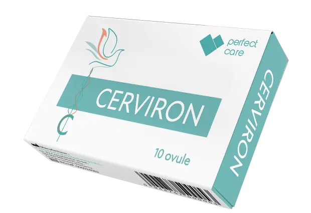

Indicații
Vulvovaginite acute și cronice, eroziuni cervicale, recuperare postoperatorie și susținerea echilibrului florei vaginale.
CERVIRON® este un dispozitiv medical utilizat în contextul afecțiunilor ginecologice, conform prospectului și recomandării specialistului.

Citiți prospectul înainte de utilizare și cereți sfatul specialistului pentru recomandări individuale.
Vulvovaginite acute și cronice, eroziuni cervicale, recuperare postoperatorie și susținerea echilibrului florei vaginale.
Prurit, arsură, eritem, leucoree patologică, dispareunie, disurie și sângerări asociate eroziunilor cervicale.
Un supozitor intravaginal, de preferință seara; durata este stabilită de medic și este menționată în prospect.
CERVIRON® poate fi utilizat singur sau ca adjuvant într-o schemă de tratament recomandată de medic, inclusiv alături de antibiotice sau antifungice.